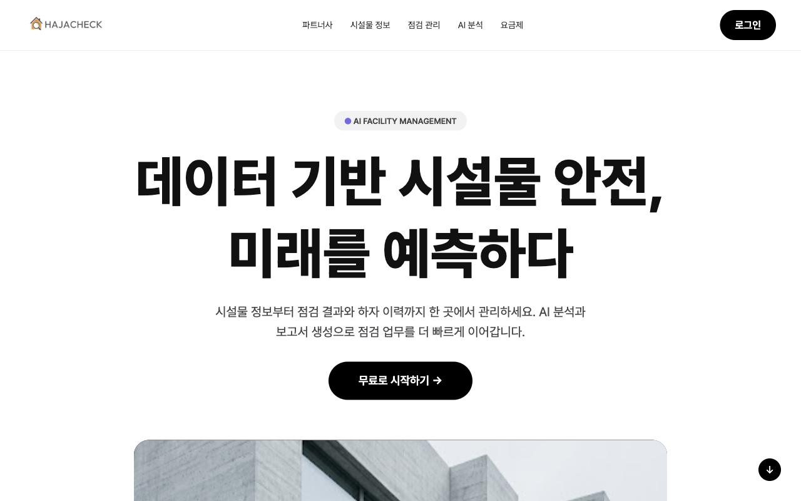
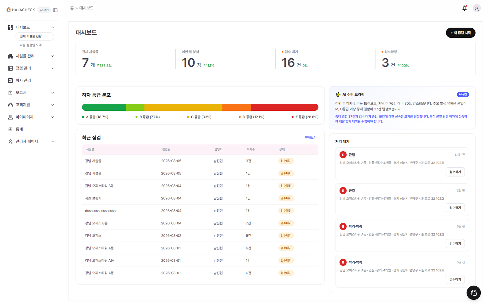

01
무엇을 풀려고 했나

라이브 사이트 랜딩 화면 — "쿨-모노톤 미니멀" 디자인, 장식색 없이 흑백 위주
시설물 외관 점검은 여전히 사람이 사진을 눈으로 보고 하자를 찾아 수기로 등급을 매기는 일이 많습니다. 점검자마다 기준이 달라 등급이 들쭉날쭉하고, 점검 이후 법규 근거를 찾아 보고서를 쓰는 데도 시간이 오래 걸립니다.
HajaCheck은 사진 한 장으로 하자 탐지 → 등급 산정 → 법규 기반 보고서 초안까지 이어지는 파이프라인을 만들어, 판단 기준을 규칙 기반으로 통일하고 보고서 작성 시간을 줄이는 것을 목표로 했습니다.
저는 8인 팀 중 고객지원·실시간 상담 도메인을 엔드투엔드로 맡았습니다 — 점검 결과에 대해 사용자가 궁금한 걸 바로 물어볼 수 있어야 서비스가 완결된다고 판단했기 때문입니다. STOMP 기반 실시간 상담 서버, 상담원 배정·대기열, 그리고 법규 질의응답을 위한 RAG 챗봇 파이프라인을 화면부터 API·AI 연동까지 직접 구현했습니다.

로그인 후 대시보드 — 하자 현황·등급 분포 요약
02
상담 + RAG 파이프라인
상담 도메인은 크게 두 흐름으로 나뉩니다. 실시간 상담은 사용자가 상담을 요청하면 STOMP(WebSocket)로 상담원 콘솔에 티켓이 뜨고, 상담원이 배정되지 않으면 대기열에서 순서를 기다립니다. RAG 법규 챗봇은 사용자 질문을 벡터+BM25 하이브리드 검색(RRF)으로 법규 문서에서 근거를 찾고, LLM이 근거가 실제로 답변에 쓰였는지(grounded) 스스로 판정한 뒤에만 출처를 붙여 답합니다.
03
팀 성과
04
기술 스택
| 영역 | 사용 기술 |
|---|---|
| 백엔드 | Java 17 · Spring Boot 3.3.5(Security · Data JPA · WebSocket) · QueryDSL · Flyway |
| AI 서버 | Python 3.11 · FastAPI · LangChain/LangGraph · PyTorch(CPU) |
| 실시간 | WebSocket(STOMP) 기반 상담 서버 |
| 데이터 | PostgreSQL 16 · Redis 7 · Chroma(임베디드 벡터 DB) |
| 프론트 | React 18.3 · Vite 6 · TypeScript 5.7 · Tailwind 4 |
| 인프라 | OCI(자체 서버) Docker Compose + nginx · GitHub Actions CI |
05
막힌 지점과 해결
관리자가 법규 문서를 업로드하면 Cloudflare에서 504 Gateway Timeout이 뜨고, 이후 그 문서는 계속 "재임베딩 필요(FAILED)"로 남았습니다.
업로드→PDF 추출→저장→임베딩이 전부 하나의 동기 요청 체인이었는데, 레이어마다 타임아웃이 달랐습니다 — nginx는 60초, Spring→FastAPI는 150초, FastAPI(uvicorn)는 무제한. bge-m3 콜드로드+CPU 추론이 60초를 넘기면 nginx가 먼저 끊어 504가 났습니다. 1차로 임베딩을 백그라운드 태스크로 비동기 전환해 응답 자체는 빨라졌는데, 이번엔 Spring이 "청킹만 끝난" 응답을 받자마자 완료 처리해버려 실제 임베딩이 끝나기 전에 DB가 DONE으로 조기 마킹되는 반대 방향 버그가 새로 생겼습니다.
FastAPI에 임베딩 진행 상태를 확인하는 조회 전용 엔드포인트를 추가하고, Spring 쪽에 전용 스레드풀로 도는 폴러(RagEmbeddingCompletionPoller)를 붙여 실제 Chroma 청크 수가 예상치와 일치할 때만 완료를 확정하도록 바꿨습니다. 프론트에도 임베딩 중인 문서가 있을 때만 자동 재조회하는 폴링을 추가해 새로고침 없이 진행 상태가 반영되게 했습니다.
비동기로 바꾸면 끝이 아니라, "언제 진짜 끝났다고 말할 것인가"를 새로 설계해야 합니다. 응답이 빨라졌다고 좋아했는데 그게 새로운 정합성 버그의 시작이었습니다.
상담 페이지에 들어가면 매번 WebSocket connection to 'ws://host/ws/' failed. nginx 로그엔 GET /ws/ → 404, Spring 로그엔 NoResourceFoundException.
클라이언트의 buildWsUrl()은 끝에 슬래시를 붙인 /ws/로 접속하는데, Spring WebSocket 핸들러에는 /ws만 등록돼 있었습니다. 슬래시 하나 차이로 요청이 WebSocket 핸들러가 아니라 일반 MVC DispatcherServlet으로 흘러가 정적 리소스를 찾다 404가 났습니다.
registry.addEndpoint("/ws", "/ws/") // trailing slash도 함께 등록
.addInterceptors(counselHandshakeInterceptor);수정 후 nginx는 401(미인증)·101(로그인 시 정상 업그레이드)로 응답이 바뀌었고, Spring 로그에서 CONNECT/CONNECTED 건수가 0에서 실제 세션 수만큼으로 올라간 걸로 검증했습니다.
WebSocket 경로는 REST 경로보다 trailing slash에 훨씬 민감합니다. 프론트·백엔드가 URL을 각자 만들 때는 슬래시 유무까지 계약에 포함시켜야 합니다.
법규와 전혀 무관한 인사말에도 챗봇이 관련 없는 법률 조문을 출처로 인용했습니다. LLM 자체는 "관련 근거를 찾지 못했습니다"라고 정직하게 답했는데도, 화면에는 출처가 떴습니다.
similarity_search가 관련성 임계값 없이 top-k(4개)를 무조건 반환하고, _node_build_sources가 LLM 답변 내용과 무관하게 검색된 문서를 항상 출처로 붙이는 구조였습니다. 즉 "검색은 됐다"와 "그 근거로 실제 답했다"가 분리되지 않고 있었습니다.
답변 스키마에 grounded: bool 필드를 추가해 LLM이 자기 답변이 검색된 발췌에 실제로 근거했는지 스스로 판정하게 하고, grounded=false면 출처 없이 "관련 근거를 찾지 못했다"는 RAG_NO_RESULT 경로로 라우팅했습니다.
RAG에서 "검색됨"과 "근거로 쓰임"은 다른 개념입니다. 검색 결과를 그대로 출처로 노출하면, 모델이 정직하게 모른다고 말해도 UI가 거짓 신뢰를 만들어낼 수 있습니다.
06
배운 점과 한계
가장 크게 남은 것 — 기능 하나를 동작하게 만드는 것보다, 그 기능이 비동기·타임아웃·재시도가 겹치는 상황에서도 정합성을 지키게 만드는 게 훨씬 어려웠습니다. RAG 임베딩 완료 판정 버그가 대표적인데, "빠른 응답"과 "정확한 상태"는 종종 트레이드오프 관계에 있고, 그 경계를 명시적으로 설계해야 한다는 걸 체감했습니다.
남은 한계 — 상담원 배정은 현재 단순 대기열(FIFO) 기반이라 상담원별 전문 분야나 부하를 반영하지 못합니다. RAG 검색도 벡터+BM25 하이브리드까지는 갔지만, 문서가 늘어날수록 임베딩 재계산 비용이 커지는 구조라 문서량이 크게 늘면 별도 배치 파이프라인이 필요합니다.